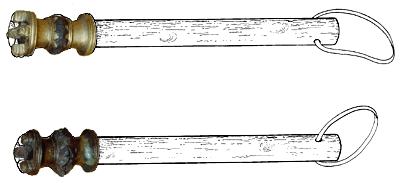
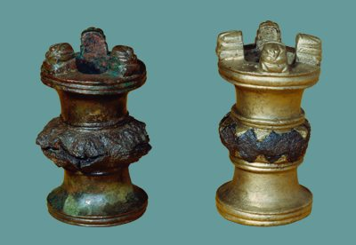

The Challenge -
Mace heads - lion headed

Eight of these bronze and iron mace heads were found by the archaeologist Henry Layard in King Ashurnasirpal's palace at Nimrud. Many of the objects found in the room had come to Assyria from further west, either as tribute or booty.

It is possible that these mace heads came to Nimrud in the same way. This shape, with little lion heads on the top, seems to have been popular right across the Near East.
|
|